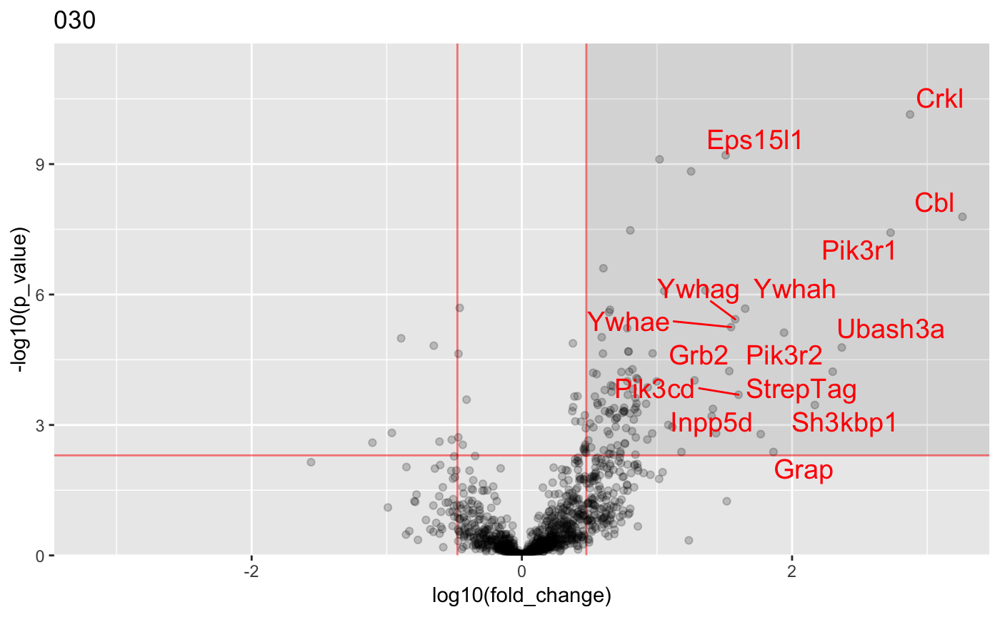
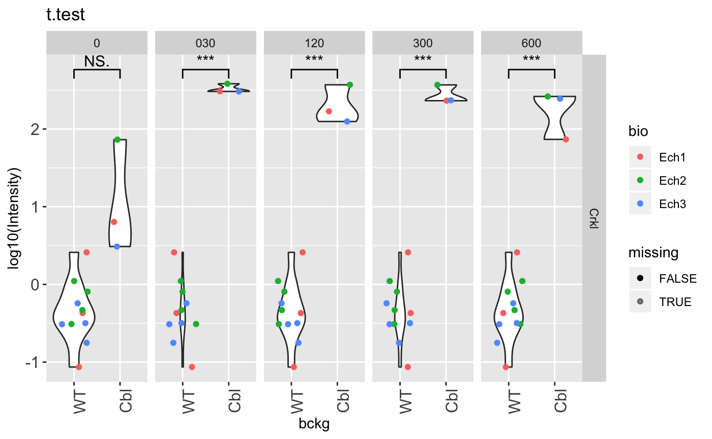

The input file can be of many types as long as it can be converted to a data.frame containing a number of columns with protein intensities and one column with protein identifiers. A protein identifier correspond to a unique entry in the UniProt database. Multiple protein identifiers can be associated with a single protein group.
Load an example dataset containing protein group intensities:
## [1] "Protein.IDs" "Majority.protein.IDs"
## [3] "Peptide.counts..all." "Peptide.counts..razor.unique."
## [5] "Peptide.counts..unique." "Protein.names"
## [7] "Gene.names" "Fasta.headers"
## [9] "Number.of.proteins" "Peptides"
## [11] "Razor...unique.peptides" "Unique.peptides"
## [13] "Sequence.coverage...." "Mol..weight..kDa."
## [15] "Somme.MSMS.Cbl.Ech1" "Somme.MSMS.Cbl.Ech2"
## [17] "Somme.MSMS.Cbl.Ech3" "Somme.MSMS.WT.Ech1"
## [19] "Somme.MSMS.WT.Ech2" "Somme.MSMS.WT.Ech3"Protein intensity column names start with “Intensity” :
idx_intensity_columns <- grep("^Intensity.", names(proteinGroups_Cbl))
print(names(proteinGroups_Cbl)[idx_intensity_columns][1:10])## [1] "Intensity.Cbl_0_Ech1_R1" "Intensity.Cbl_0_Ech1_R2"
## [3] "Intensity.Cbl_0_Ech1_R3" "Intensity.Cbl_0_Ech2_R1"
## [5] "Intensity.Cbl_0_Ech2_R2" "Intensity.Cbl_0_Ech2_R3"
## [7] "Intensity.Cbl_0_Ech3_R1" "Intensity.Cbl_0_Ech3_R2"
## [9] "Intensity.Cbl_0_Ech3_R3" "Intensity.Cbl_030_Ech1_R1"Use the function identify_conditions() to map conditions from intensity column names:
condition <- identify_conditions(proteinGroups_Cbl,
Column_intensity_pattern = "^Intensity.",
split = "_",
bckg_pos = 1,
time_pos = 2,
bio_pos = 3,
tech_pos = 4)
print(condition)## # A tibble: 90 x 5
## column bckg time bio tech
## <fct> <fct> <fct> <fct> <fct>
## 1 Intensity.Cbl_0_Ech1_R1 Cbl 0 Ech1 R1
## 2 Intensity.Cbl_0_Ech1_R2 Cbl 0 Ech1 R2
## 3 Intensity.Cbl_0_Ech1_R3 Cbl 0 Ech1 R3
## 4 Intensity.Cbl_0_Ech2_R1 Cbl 0 Ech2 R1
## 5 Intensity.Cbl_0_Ech2_R2 Cbl 0 Ech2 R2
## 6 Intensity.Cbl_0_Ech2_R3 Cbl 0 Ech2 R3
## 7 Intensity.Cbl_0_Ech3_R1 Cbl 0 Ech3 R1
## 8 Intensity.Cbl_0_Ech3_R2 Cbl 0 Ech3 R2
## 9 Intensity.Cbl_0_Ech3_R3 Cbl 0 Ech3 R3
## 10 Intensity.Cbl_030_Ech1_R1 Cbl 030 Ech1 R1
## # … with 80 more rowspreprocessed_data <- preprocess_data(proteinGroups_Cbl,
Column_gene_name = "Gene.names",
Column_score = "Score",
Column_ID = "Protein.IDs",
Column_Npep = NULL,
Column_intensity_pattern = "^Intensity.",
bait_gene_name = "Cbl",
condition = condition,
bckg_bait = "Cbl",
bckg_ctrl = "WT"
)## Contaminant proteins discarded
## Proteins with no gene name available discarded
## Number of theoretically observable peptides unavailable : used MW instead
## Merge protein groups associated to the same gene name (sum of intensities)
## Rescale median intensity across conditionsInteRact
Replace missing values with methode method, compare protein intensities between bait and control backgrounds (bckg_bait and bckg_ctrl respectively) across experimental conditions:
res <- InteRact(preprocess_df = preprocessed_data,
method = "none",
pool_background = TRUE)Identify prey proteins specifically enriched in the bait background :
res <- identify_interactors(res,
p_val_thresh = 0.001,
fold_change_thresh = 3,
n_success_min = 2,
consecutive_success = TRUE)
names(res)## [1] "bait" "bckg_bait" "bckg_ctrl"
## [4] "conditions" "replicates" "names"
## [7] "Protein.IDs" "Npep" "p_val"
## [10] "fold_change" "stoichio" "stoichio_bio"
## [13] "data" "params" "max_stoichio"
## [16] "max_fold_change" "min_p_val" "norm_stoichio"
## [19] "is_interactor" "n_success" "interactor"print(res$interactor)## [1] "Cbl" "Mccc1" "Ywhae" "Ywhaz" "Sh3kbp1" "Ubash3a"
## [7] "Crkl" "Pik3r1" "Ywhah" "Ywhag" "Ywhab" "Pik3ca"
## [13] "Grb2" "Pik3r2" "Ywhaq" "Eps15l1" "Inpp5d" "StrepTag"
## [19] "Pik3cd" "Cd5" "Itsn2" "Sdha" "Acaca" "Pccb"
## [25] "Mccc2" "Capzb" "Thy1" "Atp5o" "Atp5c1" "Itgb2"
## [31] "Stat1" "Slc25a5" "H2-D1" "Hist1h1a" "Psmb10" "Psmd13"
## [37] "Atp5b" "Atp5a1" "Phb2" "Paics" "Vdac1" "Psmc5"
## [43] "Psmc3"Create a summary data.frame :
#Create a summary data frame
sum_tbl <- summary_table(res)
head(sum_tbl[, 1:10])## bait names Protein.IDs Npep max_stoichio max_fold_change
## 1 Cbl Cbl P22682 100.5600 1.0000000 2894.614773
## 2 Cbl StrepTag Q60787TAG 3.0742 1.8479665 333.520290
## 3 Cbl Pccb Q99MN9 58.4080 1.0719011 6.519665
## 4 Cbl Crkl P47941 33.8300 0.6319007 746.665172
## 5 Cbl Ywhae P62259 29.1740 0.5548722 63.937523
## 6 Cbl Ywhaz P63101 27.7710 0.4768667 20.083919
## min_p_val is_interactor n_success p_val_0
## 1 1.679292e-12 1 5 7.483358e-05
## 2 9.731653e-07 1 4 2.233266e-03
## 3 5.014676e-06 1 5 7.885995e-04
## 4 7.228279e-11 1 4 6.719747e-02
## 5 3.165693e-12 1 4 4.769007e-03
## 6 1.220223e-08 1 3 1.212582e-03Generate volcano plots :
plot_volcanos(res, conditions = "030", p_val_thresh = 0.005, fold_change_thresh = 3, asinh_transform = FALSE)## [[1]]
Compare protein intensities across condition for a given protein
plot_comparison(res, names = "Crkl")